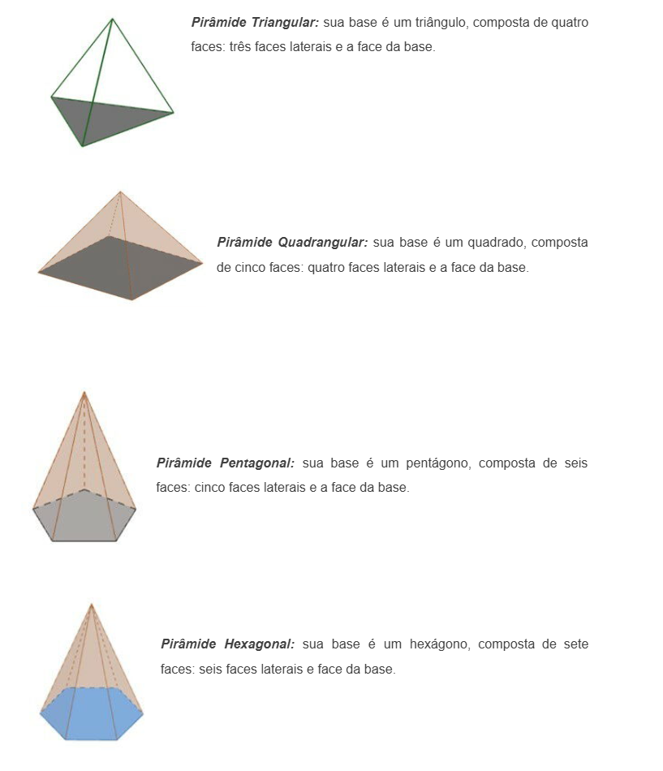
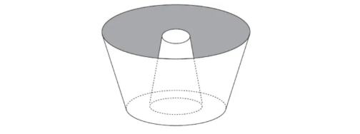

πclass — o principal pilar do seu aprendizado


Conceitos primitivos da geometria espacial (ponto, reta, plano e espaço) e as definições básicas de formas geométricas mais simples. Nessa etapa, aprendemos o que são poliedros, poliedros convexos, relação de Euler, o que são prismas, o que são pirâmides, o que são cilindros e cones. Estudamos também as propriedades dessas figuras, suas classificações e, se possível, reveja as diferenças entre prismas e pirâmides e entre cones e cilindros.
Posteriormente, é preciso estudar área e volume desses sólidos geométricos e, por fim, estudar bastante sobre suas planificações, projeções e secções. Questões envolvendo esse tipo de conteúdo são muito frequentes no Enem, mas é preciso saber a parte introdutória desses sólidos, suas características e definições para conseguir resolver esses problemas.
Poliedros são figuras tridimensionais formadas pela união de polígonos regulares, na qual os ângulos poliédricos são todos congruentes. A união desses polígonos forma elementos que compõem o poliedro, são eles: vértices, arestas e faces. No entanto, nem toda figura tridimensional é um poliedro, um exemplo disso são as figuras que possuem faces curvas chamadas de corpos redondos.
Existe uma fórmula matemática que relaciona os elementos de um poliedro chamada relação de Euler. Além disso, os poliedros dividem-se em dois grupos: os chamados poliedros convexos e os não convexos. Alguns poliedros merecem uma atenção especial, são os chamados poliedros de Platão: tetraedro, hexaedro, octaedro, dodecaedro e icosaedro.

Um poliedro será convexo quando for formado por polígonos convexos, de forma que as condições a seguir sejam aceitas:
1. A soma das arestas de todas as faces é igual ao dobro do número de arestas do poliedro.
ExemploUm poliedro tem 6 faces quadradas. Vamos determinar a quantidade de arestas.
De acordo com a propriedade, basta multiplicar o número de arestas de uma face pela quantidade de faces, e isso é igual ao dobro do número de arestas. Dessa forma:

2. A soma dos vértices de todas as faces é igual à soma das arestas de todas as faces, que é igual ao dobro do número de arestas.
ExemploUm poliedro com 5 ângulos tetraédricos e 4 ângulos hexaédricos. Vamos determinar a quantidade de arestas.
De maneira análoga ao exemplo anterior, a segunda propriedade diz que a soma das arestas de todas as faces é igual ao dobro do número de arestas. O número de arestas é dado pelo produto de 5 por 4 e 4 por 6, pois são 5 ângulos tetraédricos e 4 hexaédricos. Assim:

A relação de Euler é uma igualdade que relaciona o número de vértices, arestas e faces em poliedros convexos. Ela diz que o número de faces mais o de vértices é igual ao número de arestas mais dois.
A relação de Euler é dada por:
F + V = A + 2
Onde,
F é o número de faces;
V o número de vértices;
A o número de arestas.
Os prismas são classificados em Retos e Oblíquos:


Os chamados “prismas regulares” são aqueles cujas bases são polígonos regulares e, portanto, formados por prismas retos.
Área Lateral: para calcular a área lateral do prisma, basta somar as áreas das faces laterais. Num prisma reto, que possui todas as áreas das faces laterais congruentes, a fórmula da área lateral é:
Al = n . a
n: número de lados
a: face lateral
Área Total: para calcular a área total de um prisma, basta somar as áreas das faces laterais e as áreas das bases:
At = Sl+ 2Sb
Sl: Soma das áreas das faces laterais
Sb: soma das áreas das bases
O volume do prisma é calculado pela seguinte fórmula:
V = Ab.h
Ab: área da base
h: altura
Segundo as bases e o número arestas que formam as pirâmides, elas são classificadas em:
No tocante à inclinação da base, as pirâmides são classificadas de duas maneiras:

Para calcular a área total da pirâmide, utiliza-se a seguinte fórmula:

Onde:
Ab: Área da base
h: altura
O volume é expresso em unidade cúbicas, como cm³ e m³.
-A área da base do cilindro é calculada pela fórmula:
Ab=πr^2
-A área lateral do cilindro é calculada pela fórmula:
Al=2πrh
-A área total do cilindro é a soma da área lateral mais 2 vezes a área da base:
At= 2πrh + 2πr^2
-O volume do cilindro é calculado pela fórmula:
V=πr^2⋅h
-Existem dois tipos de secção que podem ser feitas em um cilindro: transversal e meridiana.
O cilindro é um sólido geométrico composto por duas bases no formato de círculos e paralelas, e uma área lateral que as conecta. O fato de a base do cilindro ser um círculo faz com que ele seja classificado como corpo redondo. Os principais elementos do cilindro são as suas bases, o comprimento do raio da base, a área lateral e a altura.

Para compreender um pouco mais o cálculo da área e do volume do cilindro, é importante reconhecermos a planificação do cilindro.

Com a planificação, podemos encontrar a fórmula para calcular a área da base, a área lateral e a área total do cilindro.
➝ Área da base
Como vimos, a base do cilindro é um círculo, então a fórmula da área da base é igual à fórmula da área do círculo.
Ab=πr^2
r → comprimento do raio do cilindro.
Exemplo:Qual é a área da base de um cilindro que possui raio medindo 4 cm? Utilize 3,1 como aproximação para o valor de π.
Resolução:Calculando a área da base, temos que r = 4 e π=3,1
Ab=3,1⋅4^2
Ab=3,1⋅16
Ab= 49,6 cm^2
➝ Área lateral
A área lateral do cilindro é formada por um retângulo, e sabemos que a área de um retângulo é o produto entre a base e a altura. Podemos observar que o comprimento da base do retângulo é igual ao comprimento da circunferência da base do cilindro. Sendo assim, para calcular a base do retângulo, utilizamos a fórmula do comprimento da circunferência. A área lateral pode ser calculada pela fórmula:
Al=2πrh
h → comprimento da altura do cilindro.
Exemplo:Um cilindro possui 9 cm de altura e raio medindo 5 cm. Utilizando 3 como aproximação para π, a área lateral desse cilindro é de:
Resolução:Calculando a área lateral com h = 9, r = 5 e π = 3:
Al=2⋅3⋅5⋅9
Al=270 cm^2
➝ Área total
Como o cilindro possui duas bases circulares mais a área lateral, então a área total é a soma dessas áreas.
At=2Ab+Al
Substituindo pelas fórmulas citadas anteriormente, temos que:
At=2πr^2+2πrh
Podemos ainda colocar 2πr em evidência:
At = 2πr (r+h)
Exemplo:Um cilindro possui altura igual a 12 cm e raio da base igual a 8 cm. Utilizando 3 como aproximação para o valor de π, qual é a área total desse sólido?
Sabemos que h = 12, r = 8 e π = 3, logo:
At= 2⋅3⋅8 (8+12)
At = 48⋅20
At=960 cm^2


Quando se intercepta um cone por um plano paralelo à base, é possível criar o sólido geométrico conhecido como tronco de um cone. O tronco de um cone vai sempre possuir duas bases no formato de círculos, uma maior e a outra menor.

1. (Enem 2013) Uma cozinheira, especialista em fazer bolos, utiliza uma forma no formato representado na figura:
Nela identifica-se a representação de duas figuras geométricas tridimensionais. Essas figuras são:
A) um tronco de cone e um cilindro.
B) um cone e um cilindro.
C) um tronco de pirâmide e um cilindro.
D) dois troncos de cone.
E) dois cilindros.
2. (Enem 2016) Em regiões agrícolas, é comum a presença de silos para armazenamento e secagem da produção de grãos, no formato de um cilindro reto, sobreposto por um cone, e dimensões indicadas na figura. O silo fica cheio e o transporte dos grãos é feito em caminhões de carga cuja capacidade é de 20 m³. Uma região possui um silo cheio e apenas um caminhão para transportar os grãos para a usina de beneficiamento.

Utilize 3 como aproximação para π.
O número mínimo de viagens que o caminhão precisará fazer para transportar todo o volume de grãos armazenados no silo é
A) 6.
B) 16.
C) 17.
D) 18.
E) 21.
Note que os dois sólidos possuem uma base maior e uma base maior circular, o que faz com que ambas sejam troncos de cone
2. letra DInicialmente, calcularemos o volume de um silo, que é composto por um cilindro e um cone.
Vcilindro = πr²h
Vcilindro = π ⸳ 3² ⸳ 12
Vcilindro = π ⸳ 9 ⸳ 12
Vcilindro = 108π
Agora, calcularemos o volume do cone.
Utilizando π = 3 e somando o volume do cilindro ocm o do cone, temos que:
Vsilo = 9 ⸳ 3 + 108 ⸳ 3 = 351 m³
O caminhão leva 20 m³ por viagem, então o número de viagens necessárias é calculado pela divisão
35 : 20 = 17,55
Serão necessárias, portanto, 18 viagens.